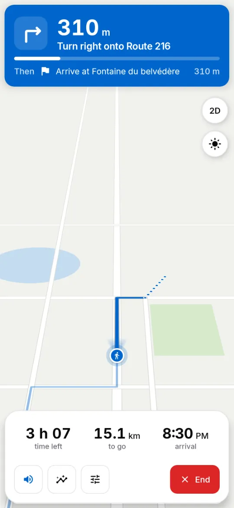
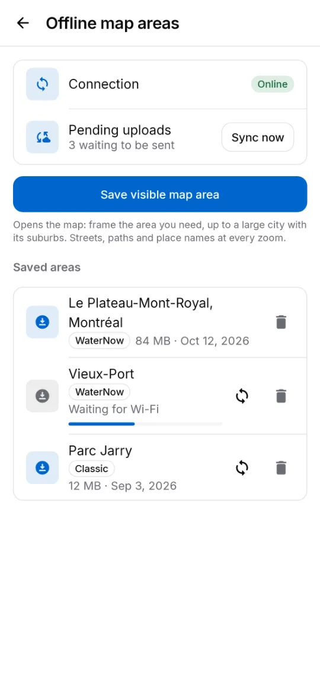

Quebec City · Quebec, Canada
Find free water and toilets in Quebec City
Old Québec, the Plains of Abraham, Saint-Roch, Limoilou: wherever you go, WaterNow shows the free water points and toilets around you, and guides you there.
Download for Android- Free
- No ads
- No account needed

Why WaterNow
Free
The map, search, directions and offline maps are free, for good.
No ads
No advertising, anywhere in the app.
No account needed
Guest mode is enough to browse the map, get directions and log your refills.
Works offline
Save your city: the map and its points work without a connection.
Turn-by-turn navigation
On foot, by bike or by car, with a voice that announces every turn.
Accessible and dog-friendly
Filters to show only accessible points, or the ones with water for your dog.
7 languages
English, French, Spanish, German, Portuguese, Japanese and Romanian.
Privacy first
No trackers. Your location is used to find the water around you, and you can export or delete your data at any time.
A look at the app


How it works
Download the app
Free, for Android, straight from this site.
Open it, with or without an account
Continue as a guest or create an account: your choice.
Follow the directions
Pick a water point or toilets near you and follow the guidance.
Frequently asked questions
Is WaterNow free?
Yes. The map, search, directions and offline maps are free, with no ads. Optional extras exist, but everything useful stays free.
Do I need an account?
No. As a guest you can browse the map, get directions and log your refills. An account also lets you add points, reviews and photos.
Does it work offline?
Yes. Save the area you need, up to a big city and its suburbs: the map and its points then work without a connection.
Which phones does it run on?
Android. The button downloads the app straight from this site, and Android asks you to allow the install.
Thirsty in Quebec City?
Get WaterNow and see the free water and toilets around you.
Download for Android